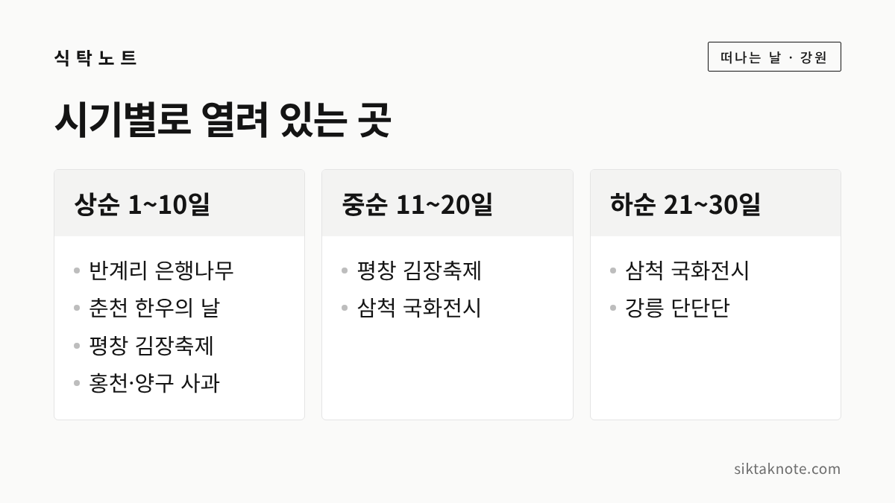
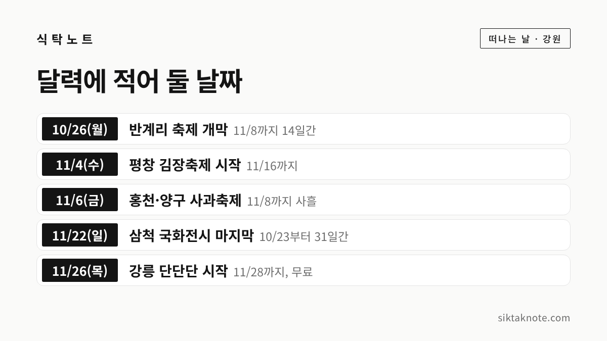

2026년 11월 강원도 행사 7곳 — 날짜와 장소, 무료 여부를 한눈에

3줄 요약
- 2026년 11월에 열리는 강원도 행사 가운데 날짜를 확인한 7곳을 날짜순으로 담았습니다.
- 11월 상순에는 반계리 은행나무, 평창 김장, 홍천과 양구 사과 행사가 몰려 있고, 하순에는 강릉 단단단페스티벌이 있어요.
- 공식 누리집에서 직접 확인한 곳은 없고 기사와 축제 정보 사이트로 확인했으니, 떠나기 전에 한 번 더 살펴보시는 게 좋겠습니다.
행사 정보
- 기준일
- 2026년 10월 26일
- 범위
- 2026년 10월 23일 ~ 11월 28일, 11월에 걸쳐 열리는 강원도 행사 7곳
- 확인 방법
- 지자체 발표를 전한 기사 6곳, 축제 정보 사이트 1곳 (공식 누리집에서 날짜를 직접 확인하지는 못함)
- 날짜가 다른 곳
- 반계리 은행나무 축제는 일부 정보 사이트에 10/30~11/12로 적혀 있고, 원주시 발표를 전한 기사는 10/26~11/8 (기사를 따름)
- 입장료
- 대부분 보도에 안내가 없음. 단단단페스티벌만 무료로 확인
2026.10.26 확인 기준. 기사로만 확인한 행사는 프로그램과 요금이 바뀔 수 있어요. 가기 전에 위 링크나 주최 측 안내를 한 번 더 확인하세요.

가을이 깊어지면 축제도 하나둘 줄어드는데요. 그래도 11월에 갈 만한 곳이 없지는 않습니다. 이 글에는 2026년 11월에 열리는 강원도 행사 가운데 날짜를 확인한 7곳을 담았어요.
| 날짜 | 행사 | 장소 | 무료 여부 | 확인 |
|---|---|---|---|---|
| 10/23(금)~11/22(일) | 제11회 삼척 국화전시회 | 삼척해변 일원 | 보도에 안내 없음 | 언론 보도 |
| 10/26(월)~11/8(일) | 반계리 은행나무 축제 | 원주 문막읍 반계리 은행나무광장 | 나무 관람은 무료로 알려짐 | 언론 보도 |
| 10/30(금)~11/1(일) | 대한민국이 한우 먹는 날 | 춘천 화동 | 보도에 안내 없음 | 언론 보도 |
| 11/4(수)~16(월) | 평창고랭지김장축제 | 평창 진부면 오대천 축제장 | 김장 체험은 유료 | 언론 보도 |
| 11/6(금)~8(일) | 제11회 홍천 사과 축제 | 홍천읍 도시산림공원 토리숲 | 보도에 안내 없음 | 언론 보도 |
| 11/6(금)~8(일) | 양구 펀치볼 사과·시래기축제 | 양구 해안면 성황지 일원 | 확인 못 함 | 언론 보도 |
| 11/26(목)~28(토) | 강릉 단단단페스티벌 | 강릉단오제전수교육관 일원 | 무료 | 축제 정보 사이트 |
'확인' 칸은 이렇게 읽으시면 됩니다. 이번에는 공식 누리집에서 날짜를 직접 확인한 곳이 없어요. 지자체 발표를 전한 기사로 6곳을, 주최 측 안내를 자세히 싣고 있는 축제 정보 사이트로 1곳을 확인했습니다.
1. 삼척 국화전시회, 10월 23일부터 11월 22일까지
보도에 따르면 삼척시가 31일 동안 삼척해변 일원에서 제11회 국화전시회를 엽니다. 국화 약 1만 500점을 전시하고 야간 조명도 설치한다고 해요. 10월 23일부터 11월 8일까지는 분재 전시와 소국 미니 꽃다발 만들기 체험이 이어집니다. 입장료 이야기는 기사에 없었는데요. 기간이 한 달로 길어서 상순이 바쁘시다면 중순이나 하순에 다녀오기 좋습니다.

2. 반계리 은행나무 축제, 10월 26일부터 11월 8일까지
원주시가 여는 축제로, 올해는 14일로 늘었다고 합니다. 보도에 따르면 지난해까지는 주민 축제위원회가 열었어요. 개막일 오후 1시에 개막식과 원주시립교향악단 공연이 있었고, 10월 30·31일과 11월 1·6·8일 오후 2시에는 버스킹과 농악 같은 무대가 이어집니다. 먹거리 부스와 프리마켓도 열려요. 주차는 공영주차장 170면에 임시주차장 340대 분량이 더해졌고, 주말·공휴일에는 공영버스 1번이 11월 8일까지 늘어납니다. 단풍 전망과 가는 길은 원주 반계리 은행나무 2026에 정리해 두었습니다.

3. 대한민국이 한우 먹는 날, 10월 30일부터 11월 1일까지
한 보도에 장소가 '춘천 화동 2571'로 나온 행사입니다. 11월 1일이 한우 먹는 날로 알려져 있는데, 그 날짜를 끼고 사흘 동안 열린다고 해요. 세부 프로그램과 입장료는 찾지 못했습니다. 기사 한 건으로만 확인한 행사라 표에는 넣되, 가시기 전에 주최 측 안내를 꼭 보시길 권합니다.

4. 평창고랭지김장축제, 11월 4일부터 16일까지
진부면 오대천 축제장에서 13일간 열리는 김장 체험 축제로, 올해가 9회라고 보도됐어요. 운영은 매일 오전 9시부터 오후 5시까지이고, 현장 접수는 오후 4시에 마감합니다. 체험은 절임배추 10kg 기준 일반 6만 9천 원, 해양심층수 소금 프리미엄 7만 9천 원, 알타리무 7kg 7만 원입니다. 사전예약은 10월 20일부터 공식 홈페이지와 전화로 받는다고 해요. 통기타 공연과 먹거리 식당, 농특산물 직거래 부스도 있습니다. 집에서 담글 계획이시라면 배추 절이기도 함께 보세요.

5. 홍천 사과 축제, 11월 6일부터 8일까지
홍천읍 도시산림공원 토리숲에서 열리는 제11회 행사입니다. 사과 품종 전시와 체험 부스, 공연, 직거래 장터가 준비된다고 해요. 보도에 따르면 축제 사흘 동안은 5kg 상자가 평소보다 5,000원 싸고, 2kg 봉지는 품종과 상관없이 1만 원입니다. 입장료는 기사에 나오지 않았어요. 사 온 사과는 사과 보관법대로 두시면 오래 먹기 좋습니다.

6. 양구 펀치볼 사과·시래기축제, 11월 6일부터 8일까지
양구군이 2월에 확정한 올해 대표 축제 일정에 11월 6일부터 8일까지, 해안면 성황지 일원으로 들어 있었습니다. 10월 초 보도에는 장소가 펀치볼힐링하우스 앞 성황지로, 주제가 '펀치볼에 빠지다, 펀치볼 Fall in Love'로 나옵니다. 먹거리와 농특산물 부스, 푸드트럭, 플리마켓이 들어온다고 해요. 올해 세부 프로그램과 입장료는 확인하지 못했습니다. 홍천 사과 축제와 같은 주말이라는 점은 알아 두시면 좋겠어요. 시래기가 궁금하다면 양구 시래기 이야기를 읽어 보세요.
7. 강릉 단단단페스티벌, 11월 26일부터 28일까지
강릉단오제위원회가 여는 무료 행사로, 강릉단오제전수교육관 일원에서 매일 10시 30분부터 19시 30분까지 운영된다고 합니다. 26일 저녁 6시 30분 안예은·추다혜차지스 공연, 27일 오전 10시 30분 어린이·청소년 전통연희, 27일 저녁 6시 30분 연합공연, 28일 오후 4시 30분 영산홍콘서트가 소개되어 있어요. 문의는 033-641-1593입니다.

아직 날짜를 못 찾은 행사들
치악산왕발걸음축제는 한 축제 정보 사이트에 11월 1일 하루, 원주 치악산 일원의 걷기와 작은음악회로 올라와 있었는데요. 다른 자료로 확인하지 못해 표에서 뺐습니다. 11월 중순에 새로 시작하는 행사도 이번에는 찾지 못했어요.
12월 이후 예고도 한 줄만 적어 둡니다. 화천 산천어축제는 2027년 1월 9일부터 31일로 일정 사이트에 올라와 있지만, 평창송어축제는 일정을 확인하지 못했습니다.
떠나기 전에 한 번만 더
마지막으로 기억하실 건 이 7곳 모두 기사나 정보 사이트 기준이라는 점입니다. 날씨나 사정에 따라 프로그램이 바뀔 수 있으니 출발 전에 위의 링크나 주최 측 전화로 확인해 주세요. 10월 행사는 10월 강원도 축제 일정에 남아 있고, 원주 쪽 가을 나들이는 원주 가을 코스도 있습니다. 새 소식이 확인되면 이 글을 고치고 날짜를 남기겠습니다.